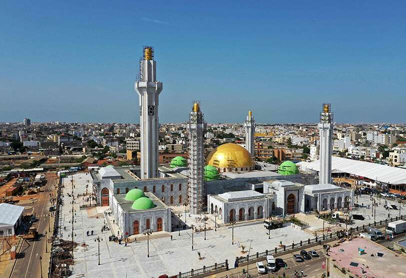
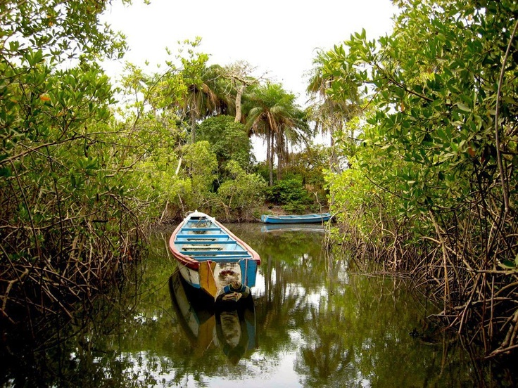
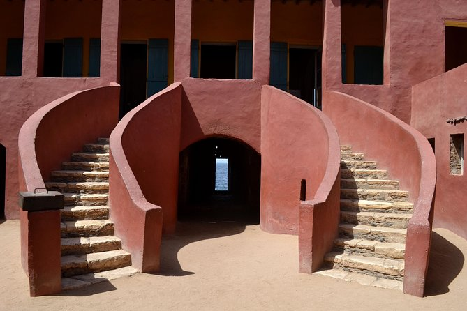
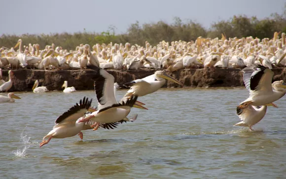

Población: 16.88M
Continente: África
Capital: Dakar

La gran mezquita de Dakar

Selva de manglares de Casamance

Puerta sin retorno de Isla Gorée

Parque nacional, reserva de aves
Senegal, cuyo nombre oficial es República del Senegal es un estado soberano de África Occidental cuya forma de gobierno es la república semipresidencialista
Es un país llano, situado en la depresión conocida como la cuenca Senegal-Mauritania. Su orografía se caracteriza por una llanura costera al Este que se eleva gradualmente hacia el Sudeste, hasta alcanzar una altitud máxima de 581 metros.
El país cuenta con una gran cantidad de recursos naturales, principalmente hierro, circonio, gas, oro, fosfatos y numerosos yacimientos de petróleo
Senegal ha presumido siempre de ser el país más seguro de África para los turistas. Desde su independencia, en 1960, y hasta 1980 su presidente fue Léopold Sédar Senghor, poeta y miembro inmortal de la Academia Francesa.